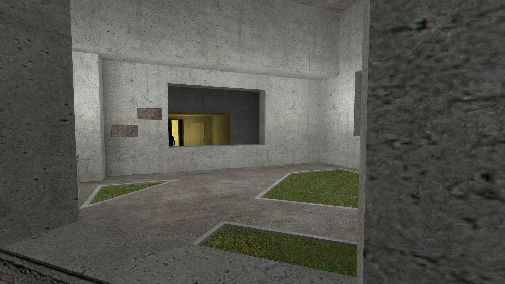

And the queen gave birth to a son named Asterion.
I know that I am accused of arrogance and perhaps misanthropy, and perhaps even madness. These accusations (which I shall punish in due time) are ludicrous. It is true that I never leave my house, but it is also true that its doors (whose number is infinite*) stand open night and day to men and also to animals. Anyone who wishes to enter may do so. Here, no womanly splendors, no palatial ostentation shall be found, but only calm and solitude. Here shall be found a house like none other on the face of the earth. (Those who say there is a similar house in Egypt speak lies.) Even my detractors admit that there is not a single piece of furniture in the house. Another absurd tale is that I, Asterion, am a prisoner. Need I repeat that the door stands open? Need I add that there is no lock? Furthermore, one afternoon I did go out into the streets; if I returned before nightfall, I did so because of the terrible dread inspired by me by the faces of the people — colorless faces, as flat as the palm of one’s hand. The sun had already gone down, but the helpless cry of a babe and the crude supplications of the masses were signs that I had been recognized. The people prayed, fled, fell prostrate before me; some climbed up onto the stylobate of the temple of the Axes, others gathered stones. One, I believe, hid in the sea. Not for nothing was my mother a queen; I cannot mix with commoners, even if my modesty should wish it.
The fact is, I am unique. I am not interested in what a man can publish abroad to other men; like the philosopher, I think that nothing can be communicated by the art of writing. Vexation and trivial minutiæ find no refuge in my spirit, which has been formed for greatness: I have never grasped for long the difference between one letter and another. A certain generous impatience has prevented me from learning to read. Sometimes I regret that, because the nights and the days are long.
Of course I do not lack for distractions. Sometimes I run like a charging ram through the halls of stone until I tumble dizzily to the ground; sometimes I crouch in the shadow of a wellhead or at a corner in one of the corridors and pretend I am being hunted. There are rooftops from which I can hurl myself until I am bloody. I can pretend anytime I like that I am asleep, and lie with my eyes closed and my breathing heavy. (Sometimes I actually fall asleep; sometimes by the time I open my eyes, the color of the day has changed.) But of all the games, the one I like best is pretending there is another Asterion. I pretend that he has come to visit me, and I show him around the house. Bowing majestically, I say to him: Now let us return to our previous intersection or Let us go this way, now, out into another courtyard or I knew that you would like this rain gutter or Now you will see a cistern that has filled with sand or Now you will see how the cellar forks. Sometimes I make a mistake and the two of us have a good laugh over it.
It is not just these games I have thought up — I have also thought a great deal about the house. Each part of the house occurs many times; any particular place is another place. There is not one wellhead, one courtyard, one drinking trough, one manager; there are fourteen [an infinite number of] mangers, drinking troughs, courtyards, wellheads. The house is as big as the world — or rather it is the world. Nevertheless, by making my way through every single courtyard with its wellhead and every single dusty gallery of gray stone, I have come out onto the street and seen the temple of the Axe and the sea. That sight, I did not understand until a night vision revealed to me that there are also fourteen [an infinite number of] seas and temples. Everything exists many times, fourteen times, but there are two things in the world that apparently exist but once — on high, the intricate sun, and below, Asterion. Perhaps I have created the stars and the sun and this huge house, and no longer remember it.
Every nine years, nine men come into the house so that I can free them from all evil. I hear their footsteps or their voices far away in the galleries of stone, and I run joyously to find them. The ceremony lasts but few minutes. One after another, they fall, without my ever having to bloody my hands. Where they fall, they remain, and their bodies help distinguish one gallery from the others. I do not know how many there have been, but I do know that one of them predicted as he died that someday my redeemer would come. Since then, there has been no pain for me in solitude, because I know that my redeemer lives, and in the end he will rise and stand above the dust. If my ear could hear every sound in the world, I would hear his footsteps. I hope he takes me to a place with fewer galleries and fewer doors. What will my redeemer be like, I wonder. Will he be bull or man? Could he possibly be a bull with the face of a man? Or will he be like me?
The morning sun shimmered on the bronze sword. Now there was not a trace of blood left on it.
“Can you believe it, Ariadne?” said Theseus. “The Minotaur scarcely defended itself.”
*Translation note: The original reads “fourteen,” but there is more than enough cause to conclude that when spoken by Asterion that the number stands for “infinite.”